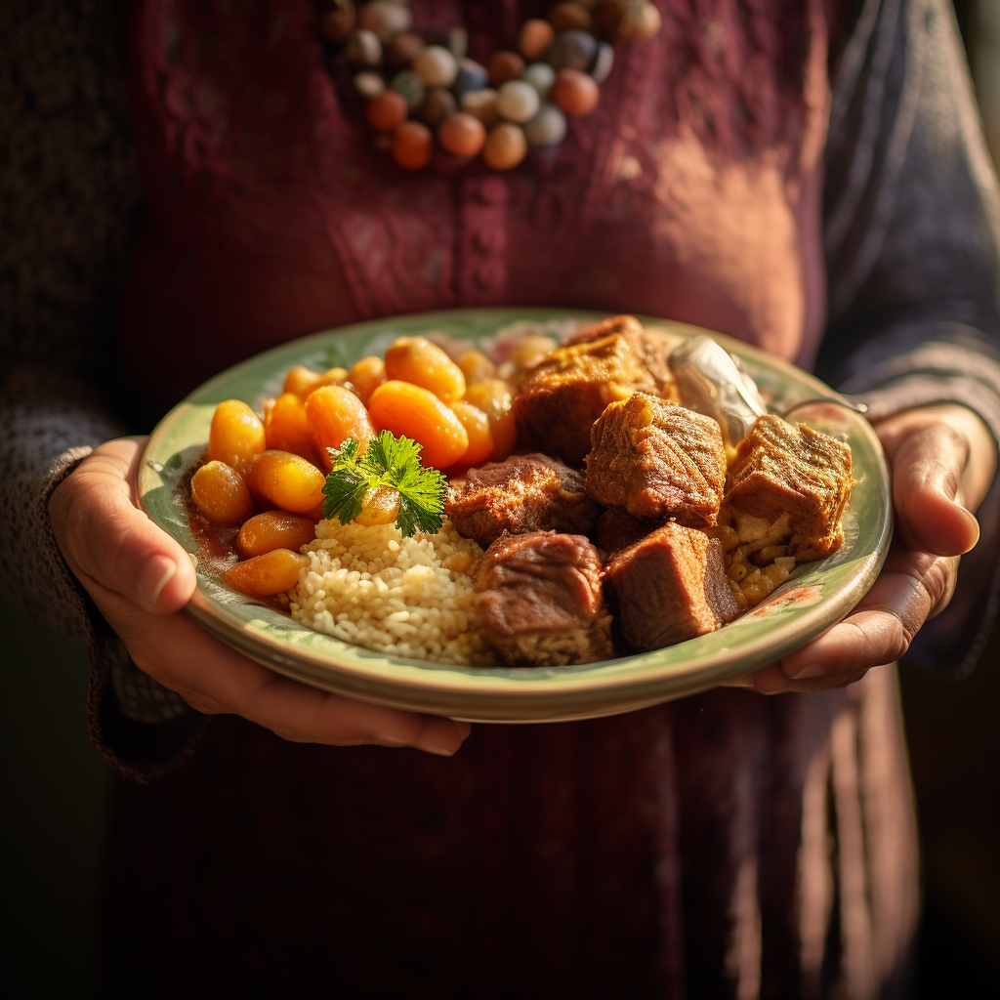

Algerian Couscous Recipe

Ingredients:
- 2 cups couscous
- 2 cups chicken or vegetable broth
- 1 lb (450g) lamb or chicken, cubed
- 2 tablespoons olive oil
- 1 onion, chopped
- 2 cloves garlic, minced
- 1 teaspoon ground cumin
- 1 teaspoon ground coriander
- 1/2 teaspoon paprika
- Salt and pepper to taste
- 1 cup chickpeas, cooked
- 1 cup carrots, diced
- 1 cup zucchini, diced
- 1 cup bell peppers, diced
- 1 cup tomatoes, diced
- 2 tablespoons fresh cilantro, chopped
Instructions:
- Heat olive oil in a large pot over medium heat. Add the chopped onion and garlic and sauté until they become translucent.
- Add the cubed lamb or chicken to the pot and brown on all sides.
- Season the meat with cumin, coriander, paprika, salt, and pepper.
- Add the diced vegetables (carrots, zucchini, bell peppers, and tomatoes) and cook for a few minutes until they start to soften.
- Pour in the chicken or vegetable broth and bring the mixture to a boil. Reduce the heat, cover, and let it simmer for about 30 minutes, or until the meat and vegetables are tender.
- In a separate pot, prepare the couscous according to the package instructions, using the remaining broth from the pot as the cooking liquid.
- Fluff the cooked couscous with a fork and serve it on a large platter.
- Place the meat and vegetable mixture over the couscous.
- Sprinkle with cooked chickpeas and chopped fresh cilantro.
- Serve your delicious Algerian couscous hot and enjoy!
I hope you'll love this recipe, freely inspired by Grand-Ma.
Home